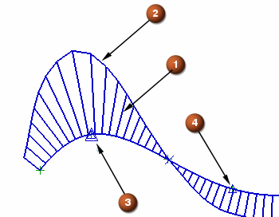

分析样条曲率
您可以分析样条的曲率并且检测拐点(该点两边曲线的曲率相反)和顶点。可以通过曲率梳显示曲率，它是您样条上各种点的曲率数量的可视化表示，您也可以显示图表来表示曲率。
有许多样条显示控制方法。

-
曲率梳
-
曲率梳帽
-
峰值
-
拐点
您可以移除任意或所有这些样条显示对象。
您可以通过选择样条，然后在形状分析工具条上点击曲线分析—曲率梳显示曲率梳和曲率梳帽。
您可以通过选择样条，然后在形状分析工具条上点击曲线分析，或者使用形状分析工具条上各自的按钮来显示拐点和峰值。
当您点击拐点，一个 X 显示在各自的拐点处。

您可以通过选择样条并在形状分析工具条上单击曲线分析—峰值  显示样条曲率的最大值。当单击该按键后，在各个峰值处将出现三角形的标记。(在一些位置可能会显示为菱形)
显示样条曲率的最大值。当单击该按键后，在各个峰值处将出现三角形的标记。(在一些位置可能会显示为菱形)